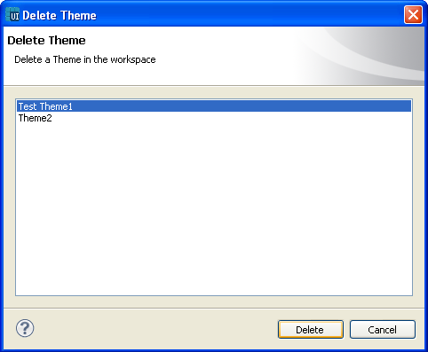

Deleting an existing theme
In the menu bar, select File ->
Delete Theme. Or from the
toolbar, select the Delete button to delete a theme.
To delete an existing theme:
- Select a theme or multiple themes from the Delete Theme window.
- Click Delete.
- The confirmation dialog will appear and on confirmation, the theme will be deleted.

Figure:
Delete a Theme